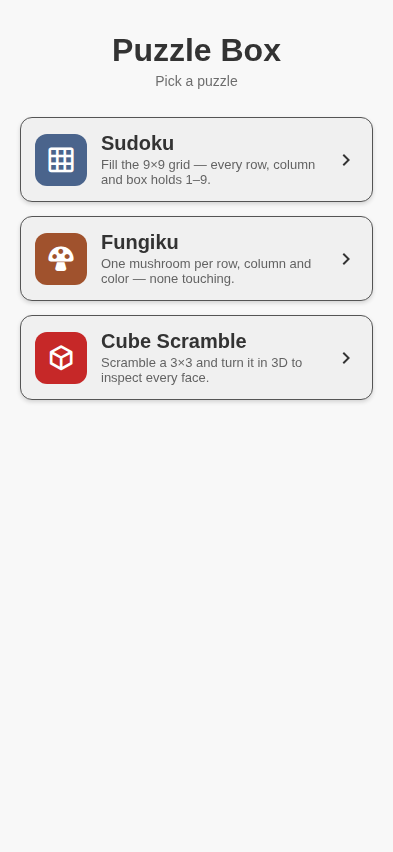

Puzzle Box: current-product map
A factual inventory for product reconsideration and redesign · 31 August 2026
Purpose. This packet freezes what the app does today: its three top-level experiences, the navigation model, shared conventions, persisted state, and major design questions. It is not a proposed redesign.

The current hub at 393 × 852, Classic theme.
1. The product today
Puzzle Box puts three peer cards behind one hub. Two are generated logic games; the third is a utility and practice recorder for a physical 3×3 cube.
| Area | Current promise | Core loop | Depth |
|---|
| Sudoku | Classic 9×9 number puzzle. | Choose difficulty → fill cells/notes → correct mistakes → score and time. | Four difficulties, notes, undo/redo, mistake feedback, seven themes. |
| Fungiku | Place one mushroom per row, column and colour region; mushrooms cannot touch. | Rule cells out / place mushrooms → spend earned assists → solve generated board. | Four difficulties, 5×5–10×10, three lives, wallet, hints, reveal and celebration. |
| Cube Scramble | Tooling for the physical cube in the operator's hands. | Scramble → inspect/animate → record solves and phases → curate methods and algorithms. | Nested navigation, favorites, solve playback, Compare, library, workbench, methods, exit checks and journey. |
Shared shell
- The hub is the root. Selecting a card pushes a full-screen experience; the home control returns to the hub.
- Each game owns its storage. Returning to the hub can show a Continue summary.
- All screens draw their own compact header rather than using the native navigation header.
- The app supports Classic, Dark, Pastel, Sunset, Sunrise, Ocean and Twilight themes through Sudoku's theme control.
- All three run on iOS, Android and web. Cube finger turns are orbit-only on web; feel and edge/hardware-back require a device.
2. Navigation and information architecture
Hub → Sudoku
Hub → Fungiku
Hub → Cube Scramble → Solve / Algorithms → Workbench / Entry / Methods / Journey
Current control-placement pattern
| Zone | What currently appears there | Observed consequence |
|---|
| Top-left header | Home or back. | Consistent escape route. |
| Top-right header | Game menu/theme in puzzles; new/save/favorites/orbit on Cube; up to three library controls. | Meanings vary by area; icon-only actions carry much of the information architecture. |
| Main subject | 9×9 grid, colour-region board, or 3D cube. | Each experience is centered on a different physical object. |
| Lower controls | Number pad/toolbars; Fungiku assists; Cube transport, solve cards and move pad. | The density rises sharply from Sudoku to Cube. |
| Sheets/modals | Difficulty, menus, favorites, solve creation, compare, algorithm selection, naming and saving. | Many secondary flows do not have a persistent place in navigation. |
Persistence model
- Sudoku: current board, timer/progress and settings snapshot.
- Fungiku: current generated puzzle/progress plus a separate global coin wallet.
- Cube: one blob containing scramble, favorites, solves, algorithms, user methods and workspace; derived progress is not stored.
3. Cross-product questions for the workshop
One product or a collection? Are the logic puzzles and physical-cube practice serving the same person and occasion, or is the hub masking separate products?
What is the primary repeat loop? Daily generated puzzle, casual variety, focused practice, or a personal training archive?
What deserves the home screen? Three equal cards, recent activity, one recommended action, or distinct modes?
What does “progress” mean? Sudoku score/time, Fungiku wallet and wins, and Cube demonstrations currently use unrelated progress languages.
How much expert tooling belongs on mobile? The Cube area now includes playback, authoring, tagging, methods and a journey; decide which are everyday actions versus advanced management.
What should themes control? The theme picker lives in Sudoku but affects the app, while cube sticker colours intentionally do not theme.
What should be discoverable without icon labels? Most header actions use glyphs plus accessibility labels, but no persistent visible labels.
Suggested review order
- Read this overview and agree on the target user and primary loop.
- Use the three detailed packets as a capability checklist, not as layout constraints.
- Mark each feature core, supporting, advanced, defer, or remove.
- Only then redesign navigation and screen composition.
Companion PDFs: sudoku-current-functionality.pdf, fungiku-current-functionality.pdf, and cube-current-functionality.pdf.